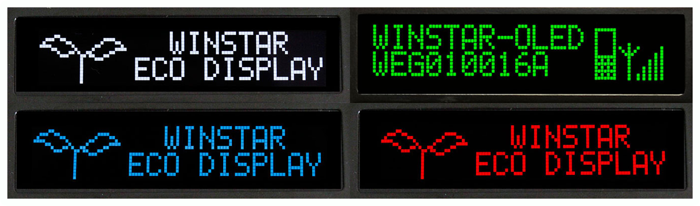
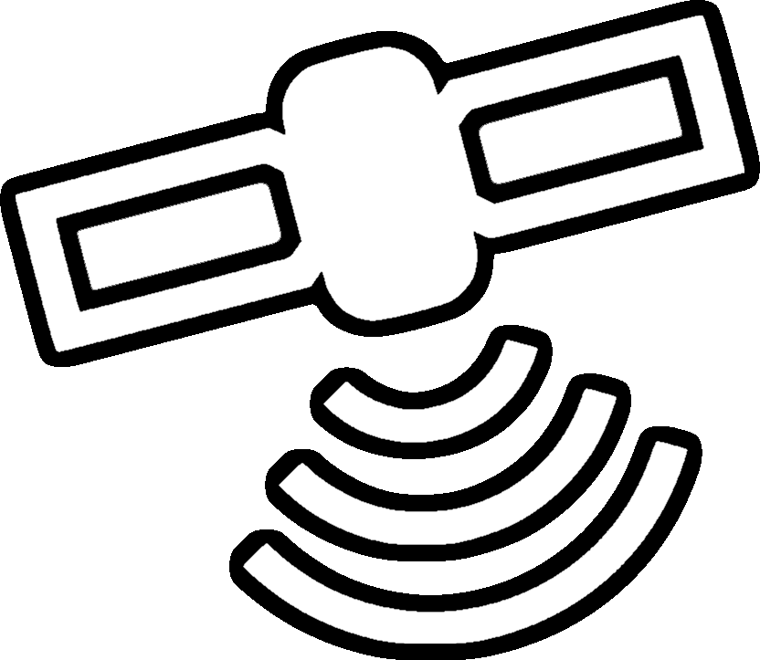
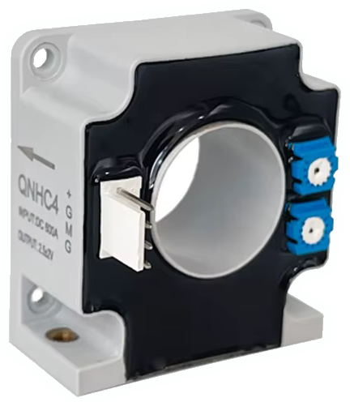
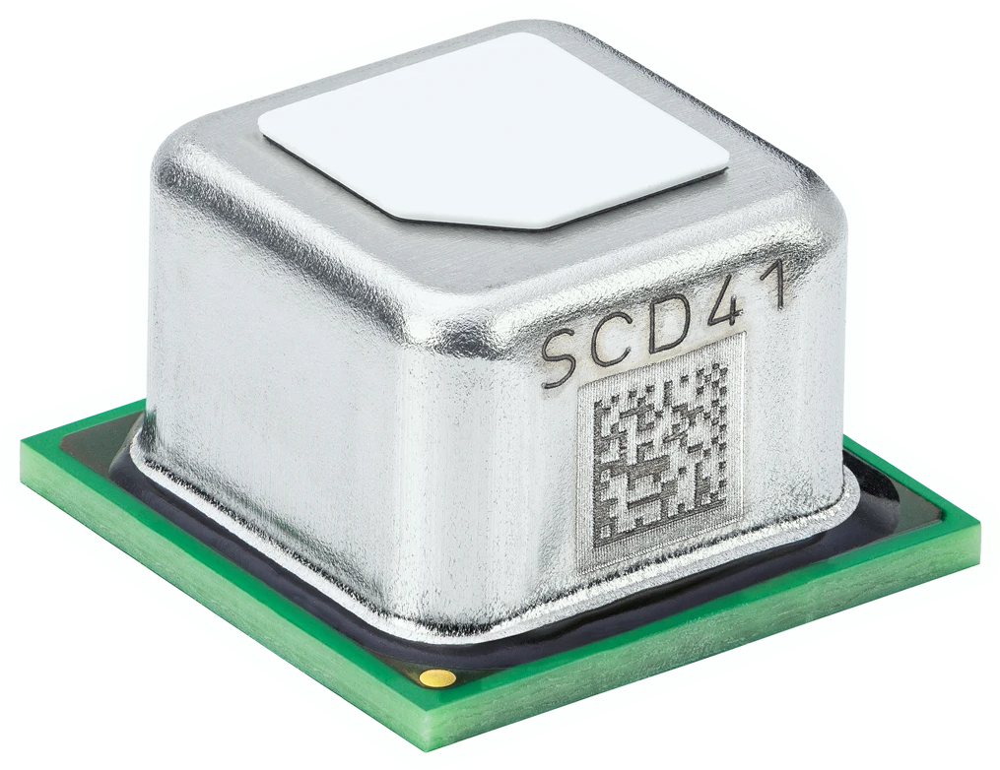

IN DEVELOPMENT
This product is still being developed.
Plug and play replacement for the factory clock module in the center dash above the vents. Developement started in May 2026 and is expected to complete sometime in 2026.
This product is still being developed.

Module comes with an 100x16 px OLED Graphical display that deliveres superior brightness and viewing angles compared to a traditional LCD display.
There will be several LED colors to choose from such as Red, Green, Blue, White and Yellow.
Time accuracy with < 1s precision. You will never have to recalibrate the time ever again.
Automatic Winter/Summer time changes based on geographical location.

Integrated GPS module:
Integrated battery voltage level monitoring.
Up to 2 additional external voltage sensing circuits.
Up to 4 NTC temperature sensors to measure outside and inside temperatures.

Connection for an external Hall Effect sensor to measure current up to 100 Amps.
For example to measure total current draw of the alternator/battery.

Connection for an external O2 Sensor such as SCD41 to monitor CO2 levels in the cabin.
Possibility to modify and configure the module via phone.
These features are optional and require additional installations such as routing cables and securing sensors.